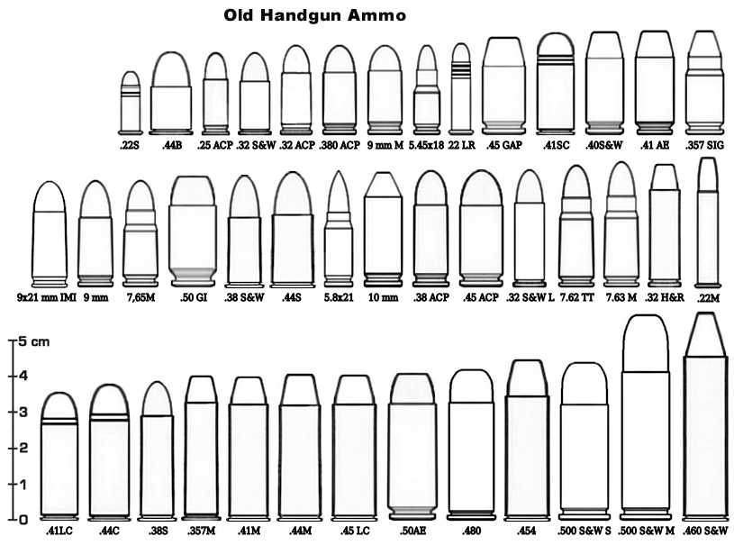
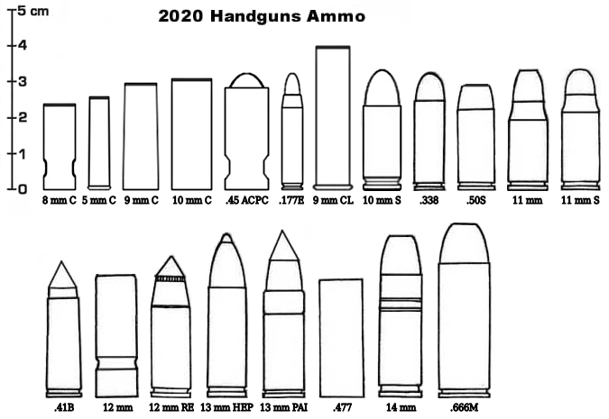

Les balles ont peu évolué depuis leur invention au milieu du 18ème siècle. Il s'agit toujours de projeter un projectile en métal lourd (généralement du plomb) à partir de l'explosion d'une charge de poudre, elle même mis à feu par une amorce à percussion.
La grande innovation de la fin du 20ème siècle a été l'apparition, avec le fusil H&K G11 des munitions sans étui. Dans ces balles, l'enveloppe en laiton a été supprimée, et le propulseur seul entoure la balle. Cela permet une baisse notable du poids et des coûts de production.
Beaucoup des munitions en 2020 sont à des balles sans étui. Toutefois, les armes anciennes ne fonctionnant pas toujours avec ces munitions, il circule encore un grand nombre de douilles métalliques. Un compromis est la balle à étui plastique, qui remplace le métal par un plastique résistant à la chaleur. Là aussi, on économise sur le poids et le prix. Ces balles peuvent également être produites dans des modifs très variés.
De nombreux calibres (comme le .357, le .44 ou le .45) sont disponibles dans deux versions : l'une pour le pistolet, l'autre pour le revolver.
Les plus courantes de ces munitions (9 mm, 10 mm...) ont été adaptées aux douilles à étui plastique au 21ème siècle.
| Abréviation 5 mm |
Désignation .22 Short |
Dégâts 1D6-1 |
Prix des 10 $2 |

Comme pour les munitions anciennes, plusieurs standards persistent : la désignation du calibre (diamètre du canon de l'arme) exprimée en millimètres (le plus courant) et l'ancienne désignation américaine, qui exprime ce diamètre en fraction de pouce (460 = 0,460 pouces).
| Abréviation 5 mm C |
Désignation 5 mm Caseless |
Dégâts 1D6 |
Prix des 10 $1 |
AP : ces munitions réduisent de moitié la protection des armures. Dégâts normaux à la chair.
